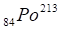
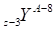

I:
S:Какие колебания называются гармоническими?
-:Всякие периодически повторяющийся колебания называются гармоническими;
-:Колебания описывающийся по закону синуса называются гармоническими;
-:Колебания описывающийся по закону косинуса называются гармоническими;
+:Колебания описывающийся по закону синуса или косинуса называются гармоническими.
I:
S:Что такой период колебание?
-:Промежуток времени начало и конца колебания;
-:Величина обратно пропорциональная частоте колебания;
+:Время за которой фаза колебания меняется на 2π;
-:Отношение 2π на циклическую частоту.
I:
S:Что такая частота колебаний?
+:Количество колебаний за единицу времени;
-:Количество колебаний за 1 с;
-:Указывает число полных колебаний;
-:Величина измеряемая в 1 Гц.
I:
S:Как различаются смещение, скорость и ускорение материальной точки при гармоническом колебании?
-:Все величины совершают гармонические колебания;
+:Скорость от смещения, а ускорение от скорости различаются по фазе на ;
-:Скорость от смещения, а ускорение от скорости различаются по фазе на 2π;
-:Все величины колеблются в одинакой фазе.
I:
S:Точка колеблится вдоль оси х по закону ,м. Определите амплитуды колебания.
-:2π м;
-:π м;
+:0,5 м;
-: м.
I:
S:Укажите уравнение гармонического колебания точки с амплитудой 5 см, периодом 4 с и начальной фазой .
+:м;
-:м;
-:м;
-: м.
I:
S:Материальная точка колеблится по закону м. Найти период колебания.
-:3,14 с;
+:2 с;
-:0,5 с;
-:0,2 с.
I:
S:Как изменится период математического маятника, если увеличить его массу в 2 раза?
-:Уменьшиться в 2 раза;
-:Увеличиться в 2 раза;
-:Уменьшиться в 4 раза;
+:Не измениться.
I:
S:Материальная точка колеблится по закону м. Найти начальную фазу колебания.
-:0,2;
-:0,5;
+:;
-:.
I:
S:Как изменится период пружинного маятника, если увеличить массу колеблющийся тело в 4 раза?
-:Увеличиться в 4 раза;
+:Увеличиться в 2 раза;
-:Уменьшиться в 2 раза;
-:Уменьшиться в 4 раза.
I:
S:Какие колебания называются свободными?
+:Если тело совершает колебательное движение за счёт первоначально полученной извне энергии, без поддержки внешных сил;
-:Если тело совершает колебательное движение за счёт периодически меняющийся внешных сил;
-:Если колеблющийся величина изменяется по закону синуса (косинуса);
-:Если колебание является затухающими.
I:
S:Найти правильную утверждение.
-:Скорость отличается от смещение по фазе на π , а ускорение на π/2;
-:Скорость и ускорение отличаются по фазе от смещения на π/2;
+:Скорость отличается по фазе от смещения на π/2, а ускорение на π.
-:Скорость и ускорение отличаются по фазе от смещения на π;.
I:
S:Укажите выражение для определения периода математического маятника.
-:;
-: ;
;
+:;
-: .
.
I:
S:Укажите выражение для определения периода физического маятника.
-:;
+:;
-:;
-:
I:
S:Укажите выражение для определения периода пружинного маятника..
+:;
-:;
-:;
-:.
I:
S:Найти дифференциальное уравнение для свободных колебаний пружинного маятника.
-:;
-:;
+:;
-:
I:
S:Найти дифференциальное уравнение для затухающих колебаний пружинного маятника.
+:;
-:;
-:;
-:
I:
S:Найти дифференциальное уравнение для свободных колебаний математичекого маятника.
-:;
+:;
-:;
-:
I:
S:Найти дифференциальное уравнение для затухающих колебаний математического маятника.
-:;
-:;
-:;
+:
I:
S:Найти дифференциальное уравнение для свободных колебаний физического маятника.
-:;
-:;
-:;
+:
I:
S:Найти дифференциальное уравнение для затухающих колебаний физического маятника.
-:;
-:;
+:;
-:
I:
S:Укажите уравнение для затухающих механических колебаний.
-:
-:
+:
-:
I:
S:Как изменяется амплитуда при гармоническом затухающем колебании?
-:Уменьшается по закону синуса;
-:Уменьшается по закону косинуса;
+:Уменьшается по экспоненциальному закону;
-:Уменьшается линейно.
I:
S:Что означает декремент затухания при затухающем колебании?
-:Экспоненциальное уменьшение со временем амплитуды колебания;
-:Линейное уменьшение со временем амплитуды колебания;
-:Показывает кратность изменение амплитуды в начальной и конечной моменты времени;
+:Показывает кратность изменение амплитуды за одинь период .
I:
S:Укажите дифференциальное уравнение вынужденных колебаний для пружинного маятника.
-:;
+:;
-:;
-:.
I:
S:Укажите дифференциальное уравнение вынужденных колебаний для математического маятника.
+:;
-:;
-:;
-:
I:
S:Укажите дифференциальное уравнение вынужденных колебаний для физического маятника..
-:;
+:;
-:;
-:.
I:
S:Укажите дифференциальное уравнение вынужденных колебаний для колебательного контура.
-:;
-:;
-:;
+:.
I:
S:Что такой резонанс?
-:Резкое возрастание амплитуды вынужденных колебаний при определенной значении частоты вынуждающей силы;
-:Зависимость амплитуды вынужденных колебаний от частоты и амплитуды вынуждающей силы;
-:Согласованность частоты колдебания с частатой определенной гармоники струны;
+:Резкое возрастание амплитуды вынужденных колебаний при равенстве частоты вынуждающей силы с собственной частотой системы.
I:
S:Точка колеблится по закону . Определите циклическую частоту колебаний.
-:0,2 рад/с;
-:1 рад/с;
-:π/5 рад/с;
+:π рад/с.
I:
S:Чему равно смещение математического маятника в одном периоде колебаний?
-:Смещение маятника равно амплитуде колебания;
-:Смещение маятника равно двум амплитуде колебания;
-:Смещение маятника равно четирём амплитуде колебания;
+:Смещение маятника равно нулю;
I:
S:Как изменится период колебание математического маятника при изменение амплитуды колебания в два раза?
-:Увеличится в 2 раза;
-:Уменьшится в 2 раза;
+:Не изменится;
-:Увеличится в 4 раза.
I:
S:В каком отношение длины двух математических маятников, если за одно и то же время превый маятник совершает 20 колебаний, а второй 10?
-:2:1
-:1:2
-:4:1
+:1:4
I:
S:Определите период колебаний пружинного маятника, если частота собственных колебаний его равна 1 Гц.
-:5 с;
-:2 с;
+:1 с;
-:0,1 с.
I:
S:Чему равно смещение пружинного маятника за время Т/2 , если в начальной момент времени груз подвещенной пружине находится в положение равновесии?
-:Смещение равно половине амплитуды;
-:Смещение равно амплитуде;
-:Смещение равно двум амплитуды;
+:Смещение маятника равно нулю.
I:
S:Как изменится частота колебаний математического маятника, если уменьшить амплитуды колебания в 3 раза?
-:увеличится в 3 раза;
-:уменьшиться в 3 раза;
+:не изменится;
-:увеличится в 9 раз.
I:
S:Из двух имеющихся математических маятников первый имеет длину 25 см, а второй 1 м. Период каких из этих маятников меньше и во сколько раз?
+:первое в два раза;
-:второе в даа раза;
-:первое в четыре раза;
-:второе в четыре раза.
I:
S:Как изменится период колебания математического маятника при увеличении массы и длины маятника в 9 раз?
-:не изменится;
-:увеличится в 9 раза;
-:уменьшится в 3 раза;
+:увеличится в 3 раза.
I:
S:Какова частота колебания математического маятника, если он совершает 8 полных колебаний за 40 с?
-:2 Гц;
-:5 Гц;
-:3,2 Гц;
+:0,2 Гц.
I:
S:Груз подвещенный пружине с жесткостью 200 Н/м совершает свободное гармоническое колебания. Каким должен быть жесткость пружины, чтобы увеличить период колебания в 2 раза?
-:400 Н/м;
-:100 Н/м;
+:50 Н/м;
-:200 Н/м.
I:
S:Математический маятник совершает гармоническое колебание с частотой ν. Как изменится частота колебания, если уменьшит длины нити маятника в 9 раз?
+:3 ν;
-:ν/3;
-:ν/9;
-:9 ν.
I:
S:С какой скоростью проходит положение равновесия груз массой m, колеблющийся на пружине жесткостью k с амплитудой А?
-:;
-:;
+:;
-:.
I:
S:Как изменится период колебания пружинного маятника, если уменьшить амплитуду колебинии в 2 раза и массу груза в 4 раза?
-:Увеличится в 4 раза;
-:Увеличится в 2 раза;
+:Уменьшится в 2 раза;
-:Уменьшится в 4 раза.
I:
S:Период колебаний пружинного маятника равен Т. Каким станет период его колебаний, если массу груза увеличить в n раз?
-:;
-:;
+:;
-:.
I:
S:Под действием силы 6 Н пружина удлиняется на 1,5 см. На эту пружину подвесили тело массой 1 кг. Определить его период (с) колебиния.
-:0,63;
+:0,31;
-:0,16;
-:1,26.
I:
S:Пружинный маятник колеблится с периодом Т. Если массу груза увеличить на 60 г, период увеличивается в два раза. Определить массу груза (г).
-:10;
+:20;
-:30;
-:40.
I:
S:Груз массой 1 кг совершает колебания под действием пружины жесткостью 400 Н/м. Каково максимальное смещение груза из положения равновесие, если в положении равновесия модуль его скорости равен 4 м/с.
-:0,04 м;
-:0,1 м;
-:0,4 м;
+:0,2 м.
I:
S:Как изменится период колебаний груза, подвешенное на резиновом жгуте, если жгут сложить пополам и подвесить на него тот же груз?
-:Увеличиться в 2 раза;
-:Увеличиться в 4 раза;
-:Не изменится;
+:Уменьшится в 2 раза.
I:
S:Длина математического маятника, если его максимальное тангенциальное ускорение равно а и амплитуда колебания А, равна … .
-:Aga;
+:Ag/a;
-:ag/A;
-:Aa/g.
I:
S:Точка совершает гармонические колебания по закону м. Определите максимальное ускорение точки.
+:7,4 м/с2 ;
-:7,6 м/с2 ;
-:78 м/с2 ;
-:80 м/с2 .
I:
S:. При максимальном отклонении нити математического маятника от вертикали ускорение шарика при гармонических колебаниях направлено ...
-:Горизонтально;
-:Вертикально вниз;
-:Вертикально вверх;
+:Перпендикулярно нити.
I:
S:Материальная точка совершает гармоническое колебание с частотой ν = 1 Гц, в момент времени t = 0 проходит положение, определяемое координатой x0 = 5 см, со скоростью υ0 = 15 см/с. Определите амплитуду колебаний.
+:5,54 см;
-:5,74 см;
-:5,94 см;
-:6,14 см.
I:
S:Материальная точка совершает колебания согласно уравнению . В какой-то момент времени смещение точки х1 = 15 см. При возрастании фазы колебаний в два раза смещение оказалось равным 24 см. Определите амплитуду А колебаний.
-:36 см;
-:32 см;
-:30 см;
+:25 см.
I:
S:К пружине подвешивают поочередно два различных груза. Период гармонических колебаний первого груза равен Т1, а второго – Т2. Чему будет равен период колебаний, если к этой пружине подвесить одновременно два груза?
+:;
-:;
-:;
-:.
I:
S:Укажите отношение кинетической энергии точки, совершающей гармонические колебания по синусоидальному закону, к ее потенциальной энергии для момента времени, когда смещение точки от положения равновесия составляет х = А/4, где А – амплитуда колебаний.
-:4;
+:15;
-:10;
-:20.
I:
S:Через какую долю периода Т скорость точки будет равна половине ее максимальной скорости? В начальной момент, совершая гармонические колебания, точки проходит положение равновесия.
-:Т/2;
-:Т/3;
-:Т/4;
+:Т/6.
I:
S:В колебательном контуре электрические колебания задается уравнением
q = 10-2cos20t. Укажите амплитудное значение заряда конденсатора.
+:10-2 К;
-:20 К;
-:cos20t К;
-:20t К.
I:
S:В конденсаторе колебательного контура изменили начальное значение заряда. При этом какое из перечисленных значений электрических колебаний возникающие в колебательном контуре остается не изменным.
-:Амплитудное значение тока;
+:Период колебания;
-:Амплитудное значение напряжения в конденсаторе;
-:Амплитуда магнитной индукции поле катушки.
I:
S:Укажите выражение для периода гармонических колебания для идеального колебательного контура.
-:;
-:;
-:;
+:.
I:
S:В колебательном контуре электрические колебания задается уравнением q = 10-2 cos 20t (К). Укажите амплитудное значение тока в цепи.
-:10-2А;
-:20 А;
+:20 10-2 А;
-:20 t А.
I:
S:В колебательном контуре электрические колебания задается уравнением q = 10-2 cos 20t (К). Укажите максимальное значение заряда в конденсаторе.
+:10-2К;
-:20 К;
-:20 10-2 К;
-:20 t К.
I:
S:Заряд на обкладках конденсатора меняется по закону q = 44 10-4cos ωt (К). Напряжение Um= 220 B. Определите емкость конденсатора.
-:2 мкФ;
-:44 мкФ;
+:20 мкФ;
-:4,4 мкФ.
I:
S:Заряд на конденсаторе изменяется по закону q = q0 cos (ωt+φ) . По какому закону изменяется ток в цепи.
-:I = q0ω cos (ωt+φ);
-:I = q0t cos (ωt+φ);
+:I =-q0ω sin (ωt+φ);
-:I = q0 /t cos (ωt+φ).
I:
S:Укажите выражение для емкостного сопротивление.
-:XL = ωL;
-:XC = ωC;
+:XC = 1/ωC;
-:XC = 1/ωL.
I:
S:Укажите выражение для индуктивного сопротивление.
+:XL = ωL;
-:XC = ωC;
-:XC = 1/ωC;
-:XL = 1/ωL.
I:
S:Как изменится период свободных колебания в колебательном контуре при увеличении индуктивности катушки в 4 раза?
-:увеличится в 4 раза;
-:уменьшится в 4 раза;
+:увеличится в 2 раза;
-:уменьшится в 2 раза.
I:
S:Как изменится период свободных колебания в колебательном контуре при увеличении емкости конденсатора 4 раза?
-:увеличится в 4 раза;
-:уменьшится в 4 раза;
+:увеличится в 2 раза;
-:уменьшится в 2 раза.
I:
S:Как изменится период свободных колебания в колебательном контуре при увеличении емкости конденсатора в 4 раза и уменьшении индуктивности катушки в 4 раза?
-:увеличится в 4 раза;
+:не изменится;
-:увеличится в 2 раза;
-:уменьшится в 2 раза.
I:
S:Укажите выражение для определения собственной частоты колебания в колебательном контуре.
-: ;
-:;
-: ;
;
+: .
.
I:
S:В колебательном контуре электрические колебания задается уравнением . Определите амплитуды колебания электрического заряда (Кл).
-:;
-:;
-:;
+:.
I:
S:В колебательном контуре электрические колебания задается уравнением . Определите амплитуды колебания электрического тока (А).
-: ;
-: ;
+: ;
-:.
I:
S:. В колебательном контуре электрические колебания задается уравнением . Определите фазу колебания.
+:;
-:;
-:;
-:.
I:
S:В колебательном контуре электрические колебания задается уравнением . Определите начальную фазу колебания.
-:;
+:;
-:;
-:.
I:
S:В колебательном контуре электрические колебания задается уравнением . Определите период колебания (с).
+:;
-:;
-:;
-:.
I:
S:Укажите выражение дифференциального уравнения для вынужденных электромагнитных колебаний.
-:;
+:;
-:;
-:.
I:
S:Укажите выражение дифференциального уравнения для свободных электромагнитных колебаний.
-:;
-:;
+:;
-: .
.
I:
S:Укажите выражение дифференциального уравнения для затухающих электромагнитных колебаний.
+:;
-:;
-:;
-:.
I:
S:Укажите уравнение затухающих электромагнитных колебаний.
-:;
-:;
+:;
-:.
I:
S:Максимальный заряд на обкладках конденсатора в колебательном контуре равен 2,5 10-6 Кл, а максимальный ток , протекающий через контур, равен 3,14 мА. Найти частоту электромагнитных колебаний контура.
-:200 кГц;
+:200 Гц;
-:314 кГц;
-:314 Гц.
I:
S:Расстояние между пластинами конденсатора, входящего в колебательный контур, уменьшили втрое. При этом частота колебаний ...
-:увеличится в 3 раза;
-:уменьшится в 3 раза;
-:увеличится в раза;
+:уменьшится в раза.
I:
S:Колебательный контур содержит конденсатор емкостью 100 мкФ, и катушку индуктивностью 10 мкГн. Сколько электрических колебаний в минуту происходит в данном колебательном контуре?
-:105;
+:3 105;
-:90 105;
-:60 105.
I:
S:Колебательный контур состоит из катушки и двух последовательно соединенных конденсаторов с емкостью с каждый. Как изменится частота свободных электромагнитных колебаний контура, если конденсаторы подсоединить параллельно?
-:увеличится в 2 раза;
+:уменьшится в 2 раза;
-:увеличится в 4 раза;
-:уменьшится в 4 раза.
I:
S:Колебательный контур состоит из катушки и двух последовательно соединенных конденсаторов с емкостью с каждый. Как изменится период свободных электромагнитных колебаний контура, если конденсаторы подсоединить параллельно?
+:увеличится в 2 раза;
-:уменьшится в 2 раза;
-:увеличится в 4 раза;
-:уменьшится в 4 раза.
I:
S:Емкость конденсатора в контуре С= 5 мкФ, циклическая частота колебаний контура 500 рад/с. Чему равна индуктивность (Гн) катушки?
-:500;
-:50;
-:1;
+:0,8.
I:
S:Как изменится частота колебаний колебательного контура, если расстояние между пластинами плоского конденсатора контура увеличить в 2 раза?
-:увеличится в 2 раза;
-:уменьшится в 2 раза;
-:увеличится в раза;
+:уменьшится в раза.
I:
S:В колебательном контуре колебания совершает...
-:емкость;
-:индуктивность;
-:сопротивление;
+:заряд конденсатора.
I:
S:Как изменится частота электромагнитных колебаний, если внутрь катушки колебательного контура ввести сердечник из ферромагнетика?
-:увеличится;
+:уменьшится;
-:не изменится;
-:сначало уменьшится, потом увеличится.
I:
S:Как изменится период электромагнитных колебаний, если внутрь катушки колебательного контура ввести сердечник из ферромагнетика?
+:увеличится;
-:уменьшится;
-:не изменится;
-:сначало уменьшится, потом увеличится.
I:
S:Как изменится период электромагнитных колебаний в колебательном контуре, если конденсатор контура заполнить диэлектриком с диэлектрической проницаемостью Ɛ= 4.
+:увеличится в 2 раза;
-:уменьшится в 4раза;
-:увеличится в 16 раз;
-:уменьшится в 2 раза.
I:
S:Как изменится частота электромагнитных колебаний в колебательном контуре, если конденсатор контура заполнить диэлектриком с диэлектрической проницаемостью Ɛ= 4.
-:увеличится в 2 раза;
-:уменьшится в 4раза;
-:увеличится в 16 раз;
+:уменьшится в 2 раза.
I:
S:Сила тока изменяется по закону . НайдУкажите частоту (Гц) изменения тока.
-:5;
+:50;
-:100;
-:100π.
I:
S:Закон изменения напряжения имеет вид . Каков период изменения напряжения (с)?
-:0;
-:0,01;
+:0,02;
-:0,22.
I:
S:Уравнения колебаний тока в колебательном контуре имеет вид . Укажите соответствующее ему уравнение колебаний заряда конденсатора.
-:;
-:;
+:;
-: .
.
I:
S:Колебания заряда подчиняются закону . Определить максимальную силу тока (мА).
-:0,1;
+:0,1 π;
-:π;
-:10 π.
I:
S:Изменение заряда конденсатора в колебательном контуре задано уравнением Чему равна амплитуда силы тока (мА).
-:0,1;
+:0,1 π;
-:π;
-:10 π.
I:
S:Заряд конденсатора изменяется по закону . Укажите силу тока в цепи (А) в момент времени t = 2с.
-:20;
-:10;
+:9;
-:19.
I:
S:Как нужно изменить емкость конденсатора для того, чтобы увеличить собственную частоту колебаний контура в 2 раза?
+:уменьшить в 4 раза;
-:уменьшить в 2 раза;
-:увеличить в 4 раза;
-:увеличить в 2 раза.
I:
S:В каких веществах возникают продольные упругие волны?
-:Твердых телах и на поверхности жидкостей;
+:В твердых телах, жидкостях и в газах;
-:В твердых телах и в газах;
-:Только в твёрдых телах.
I:
S:В каких веществах возникают поперечные упругие волны?
-:Твердых телах и на поверхности жидкостей;
-:В твердых телах, жидкостях и в газах;
-:В твердых телах и в газах;
+:Только в твёрдых телах.
I:
S:Внутри каких сред (1-газ, 2-жидкость, 3-твёрдое тело) могут распространяться поперечные механические волны?
-:только 1;
-:только 2;
+:только 3;
-:1 и 2.
I:
S:Внутри каких сред (1-газ, 2-жидкость, 3-твёрдое тело) могут распространяться продольные механические волны?
-:1 и 2;
-:1 и 3;
-:2 и 3;
+:1,2 и 3.
I:
S:В каком направлении колеблются частицы среды в продольной волне?
-:Во всех направлениях;
+:Только в направлении распространения волны;
-:В направлении, в перпендикулярном направлению распространения волны;
-:В направлении распространения волны и в перпендикулярном направлении.
I:
S:В каком направлении колеблются частицы среды в поперечной волне?
-:Во всех направлениях;
-:Только в направлении распространения волны;
+:В направлении, в перпендикулярном направлению распространения волны;
-:В направлении распространения волны и в перпендикулярном направлении
I:
S:Лодка качается на волнах, которые распространяются со скоростью 1,5 м/с. Расстояние между двумя ближайшими гребнями волны 9 м. НайдУкажите период колебания лодки.
-:1,5 с;
-:3 с;
+:6 с;
-:9 с.
I:
S:Наблюдатель определил, что расстояние между соседними гребнями волн 12 м. Чему будет равна скорость распространении волны, если гребень волны проходит мимо наблюдателя через каждые 6 с?
-:18 м/с;
-:12 м/с;
-:6 м/с;
+:2 м/с.
I:
S:Расстояние между первым и третьим гребнями волны равно 18 см. Чему равна длина волны?
+:9 см;
-:18 см;
-:56 см;
-:72 см.
I:
S:Расстояние между первым и пятым гребнями волны равно 40 см. Чему равна длина волны?
-:20 м;
-:40 м;
-:8 м;
+:10 м.
I:
S:Пробка колеблется на волнах 10 раз за 5 с. Какова скорость распространения волны (м/с), если расстояние между двумя соседними горбами волны равно 1 м?
+:2;
-:2,5;
-:3;
-:4.
I:
S:I:
S:Пробка колеблется на волнах с частотой 1 Гц. Какова скорость распространения волны (м/с), если расстояние между двумя соседними горбами волны равно 1 м?
-:2;
+:1;
-:3;
-:4.
I:
S:Уравнение колебаний источника волны . Скорость распространения колебаний в среде 600 м/с. Чему равна длина волны (м)?
-:10;
-:4;
+:3;
-:2.
I:
S:Период колебаний волны на поверхности воды равно 2 с, расстояние между соседними волнами – 20 см. Определить скорость волн (мм/с).
-:1;
-:10;
+:100;
-:0,1.
I:
S:Дайте определения длины волны λ.
-:Расстояние проходимой волной за время t;
+:Расстояние между ближайшими частицами, колеблющимися в одинаковой фазе;
-:Расстояние между двумя частицами, колеблющимися в противоположной фазе;
-:Расстояние между первым и последними частицами, колеблющимися в одинаковой фазе;
I:
S:Что такой волновой фронт?
+:Геометрическое место точек, до которых доходят колебания к моменту t;
-:Геометрическое место точек, до которых доходят колебания за период Т;
-:Геометрическое место точек, колеблющихся в одинаковой фазе;
-:Все ответы верны.
I:
S:Дайте определение волновой поверхности.
-:Геометрическое место точек, до которых доходят колебания к моменту t;
-:Геометрическое место точек, до которых доходят колебания за период Т;
+:Геометрическое место точек, колеблющихся в одинаковой фазе;
-:Все ответы верны.
I:
S:Что указывает вектор Умова?
-:Направлению распространение плоской волны;
-:Направлению распространение сферической волны;
+:Вектор плотности потока энергии;
-:Направлению колебания частиц среды.
I:
S:Укажите уравнению плоской волны, распространяющийся вдоль оси x.
+:;
-:;
-:;
-: .
.
I:
S:Какие волны называются когерентными?
-:Волны с одинаковыми длинами волн;
-:Волны с одинаковыми частотами;
-:Волны с одинаковыми амплитудами и постоянными разностью фаз;
+:Волны с одинаковыми частотами и постоянными разностью фаз;
I:
S:Интерференция волн, это….
-:Усиление амплитуды результирующей волны при наложение двух волн;
-:Усиление или ослабление результирующей волны при наложение двух волн;
+:Усиление или ослабление результирующей волны при наложение двух когерентных волн;
-:Усиление результирующей волны при наложение двух когерентных волн;
I:
S:Укажите решение дифференциального уравнения плоской электромагнитной волны:
+:
-:
-:
-:
I:
S:Фаза плоской электромагнитной волны:
-:
-:
-:
+:
I:
S:Волновое число определяется формулой:
+:
-:
-:
-:
I:
S:От источника звука распространяются колебания с длиной волны 2 м. Чему равна разность фаз между колебаниями точек с координатами х1=2 м и х2=6 м?
-:π;
-:3π;
+:4π;
-:6π.
I:
S:. Какова разность фаз звуковых колебаний с частотой 680 Гц в двух точках , если разность расстояний от этих точек до источника звука равна 25 см? Скорость звука в воздухе 340 м/с.
-:π/6;
-:2π;
-:π/4;
+:π.
I:
S:Разность фаз колебаний в двух точках, расположенных на одной линии вдоль направления распространения волны, равна 2π. Какова длина волны (м), если расстояние между этими точками равно 2 м?
-:1;
-:2;
+:4;
-:6.
I:
S:Наименьшее расстояние вдоль направления распространения волны между двумя точками среды, колеблющимися со сдвигом фаз 2π/3, равно 2 м. Чему равна длина волны (м)?
-:4;
-:2;
-:8;
+:6.
I:
S:Определите разность фаз для точек, удаленных от источника колебаний на 3,5 и 2,0 м. Период колебаний 0,5 с, скорость распространения волны 6 м/с.
-:π/2;
-:0;
+:π;
-:π/4.
I:
S:Звуковые волны из воздуха распространились в воду. Длина волны звука в воздухе λ1 = 1 м. Какова длина волны звука в воде? Скорость звука в воде υ1 = 1,36 103 м/с, в воздухе υ2 = 0,34 103 м/с.
+:4 м;
-:1 м;
-:0,2 м;
-:0,4 м.
I:
S:Каким из перечисленных ниже свойств обладают поперечные волны, но не обладают продольные волны?
-:преломление;
-:интерференция;
+:поляризация;
-:дифракция.
I:
S:Электромагнитные волны – это:
+:переменное электромагнитное поле, распространяющееся в пространстве с конечной скоростью;
-:переменное электромагнитное поле, распространяющееся в пространстве с бесконечной скоростью;
-:постоянное электромагнитное поле, распространяющееся в пространстве с конечной скоростью;
-:постоянное электромагнитное поле, распространяющееся в пространстве с бесконечной скоростью.
I:
S:Векторы и в плоской электромагнитной волне:
+:взаимно перпендикулярны и лежат в плоскости перпендикулярной вектору скорости распространения волны;
-:взаимно перпендикулярны и лежат в плоскости параллельной вектору скорости распространения волны;
-:взаимно параллельны и лежат в плоскости перпендикулярной вектору скорости распространения волны;
-:взаимно параллельны и лежат в плоскости параллельной вектору скорости распространения волны.
I:
S:Основным свойством электромагнитной волны является:
-:перенос энергии за счет передачи соседним частицам состояния колебательного движения;
+:перенос энергии без переноса вещества;
-:перенос энергии за счет перемещения вещества среды вслед за волной;
-:перенос энергии без передачи соседним частицам состояния колебательного движения.
I:
S:Определите длины волны электромагнитного излучения, если период его колебания в вакууме 1,5 10-12с.
+:2м;
-:0,45 м;
-:4,5 м;
-:0,45 мм.
I:
S:Космическим кораблем передается радиоволна на частоте 20 МГц. Определить длины волны.
-:5 м;
-:10 м;
+:15 м;
-:20 м.
I:
S:Если на отрезок равный 0,5 м размещается 2 106 штук длин волн, Определите частоту монохроматического излучения.
+:12 104 Гц;
-:1,2 1014 Гц;
-:14 102 Гц;
-:12 1012 Гц
I:
S:На какой частоте работает генератор СВЧ, если он генерирует колебания с длиной волн 2 м?
-:300 МГц;
-:200 МГц;
-:20 МГц;
+:150 МГц.
I:
S:Определить длины волны электромагнитного излучения, если расстояние между первой и четвёртой горбами равно 30 м.
-:30 м;
-:15 м;
+:10 м;
-:7,5 м.
I:
S:Как изменится энергия излучаемой за единицу времени вибратором Герца, если увеличить частоты электромагнитного излучения в 2 раза? Амплитуды волны считать постоянным.
+:16;
-:8;
-:4;
-:2.
I:
S:Векторы и колеблятся по осям у и х соответственно. Укажите направление распространения электромагнитной волны.
-:в положУкажительном направление х;
-:в отрицательном направление х;
-:в положУкажительном направление z;
+:в отрицательном направление z;
I:
S:Колебательный контур генерирует электромагнитные колебания с частотой 6 МГц. Сколько волн разместится на расстояние 100 км вдоль направление распространения волн?
-:1000;
-:1500;
+:2000;
-:2500.
I:
S:Определите скорость распространение электромагнитных волн, если длина волны 200 нм и с частотой 8 1014 Гц.
-:4 107;
-:2,5 108;
-:2,5 107;
+:1,6 108;
I:
S:На какую длины волны (м) настроен колебательный контур, если он состоит из конденсатора с емкостью 200 пФ и катушки с индуктивностью 10-4 Гн?
-:300;
-:628;
+:377;
-:288.
I:
S:Что изменится при переходе электромагнитной волны, с одной среды в другую?
-:изменение не происходит;
-:изменяется только частота колебание;
+:изменится длина волны и скорость распространение волны;
-:изменится амплитуда и скорость распространение волны.
I:
S:Определите длины волны электромагнитного излучение с периодом колебания 10-7 с.
-:1;
-:3;
-:10;
+:30.
I:
S:Электромагнитная волна образуется ….
-:Покоящимся зарядом;
+:зарядом движущимися с ускорением;
-:зарядом движущимися равномерно прямолинейно;
-:Постоянным током протекающимися через контур.
I:
S:Определите частоту (Гц) электромагнитной волны с длиной волны 10 см.
-:3 108;
+:3 107;
-:3 106;
-:3,3 107;
I:
S:Какое из нижеперечисленных видов электромагнитного излучения обадает наибольшую длину волны?
-:Рентгеновское излучение;
-:Гамма излучение;
-:Ультрафиолетовое излучение;
+:Инфракрасное излучение.
I:
S:Какое из нижеперечисленных видов электромагнитного излучения обадает наибольшую частоту?
-:Рентгеновское излучение;
+:Гамма излучение;
-:Ультрафиолетовое излучение;
-:Инфракрасное излучение.
I:
S:Какое из нижеперечисленных видов электромагнитного излучения обадает наименьшую длину волны?
-:Рентгеновское излучение;
+:Гамма излучение;
-:Ультрафиолетовое излучение;
-:Инфракрасное излучение.
I:
S:Какое из нижеперечисленных видов электромагнитного излучения обадает наименьшую частоту?
-:Рентгеновское излучение;
-:Гамма излучение;
-:Ультрафиолетовое излучение;
+:Инфракрасное излучение.
I:
S:Укажите правильное расположение нежеперечисленных видов электромагнитного излучения в порядке убывания их длин волн.
-:Ультрафиолетовое, Рентгеновское, инфракрасное, радиоволны;
-:Рентгеновское, Рентгеновское, инфракрасное,ультрафиолетовое;
+:Радиоволны, инфракрасное, ультрафиолетовое, рентгеновское;
-:Рентгеновское, ультрафиолетовое, инфракрасное, радиоволны.
I:
S:Укажите правильное расположение нежеперечисленных видов электромагнитного излучения в порядке увеличение их длин волн.
-:Ультрафиолетовое, Рентгеновское, инфракрасное, радиоволны;
-:Рентгеновское, Рентгеновское, инфракрасное,ультрафиолетовое;
-:Радиоволны, инфракрасное, ультрафиолетовое, рентгеновское;
+:Рентгеновское, ультрафиолетовое, инфракрасное, радиоволны.
I:
S:Укажите правильное расположение нежеперечисленных видов электромагнитного излучения в порядке убывания их частоты.
-:Ультрафиолетовое, Рентгеновское, инфракрасное, радиоволны;
-:Рентгеновское, Рентгеновское, инфракрасное,ультрафиолетовое;
-:Радиоволны, инфракрасное, ультрафиолетовое, рентгеновское;
+:Рентгеновское, ультрафиолетовое, инфракрасное, радиоволны.
I:
S:Укажите правильное расположение нежеперечисленных видов электромагнитного излучения в порядке увеличение их частоты.
-:Ультрафиолетовое, Рентгеновское, инфракрасное, радиоволны;
-:Рентгеновское, Рентгеновское, инфракрасное,ультрафиолетовое;
+:Радиоволны, инфракрасное, ультрафиолетовое, рентгеновское;
-:Рентгеновское, ультрафиолетовое, инфракрасное, радиоволны.
I:
S:Определите длину волны электромагнитной волны в вакууме, если ее частота равна 3 1013 Гц
-:10-8 м;
-:0,01 м;
+:0,01 мм;
-:0,001 мм.
I:
S:В каких условиях наблюдается излучение электромагнитных волн?
+:При колебаниях зарядов;
-:При равномерном прямолинейном движение электронов;
-:При ускоренном движение нейтрального атома;
-:При протекания постоянного тока по цепи.
I:
S:Электромагнитные волны являются ... волнами.
-:Продольнами;
-:Продольными и поперечными;
+:Поперечными;
-:Стоячими.
I:
S:На каком расстояние находится объект, если радиолокатор регистрирует выпущунный им сигнал через 3 10-4 с?
+:45;
-:90;
-:180;
-:270.
I:
S:Определите длины волны электромагнитного излучение с периодом колебания 10-7 с.
-:1;
-:3;
-:10;
+:30.
I:
S:Определите частоту (Гц) электромагнитных колебаний, если длина волны электромагнитного излучения в вакууме составляет λ = 6 10-7 м.
-:6 1015;
-:5 1015;
-:1,8 1015;
+:5 1014.
I:
S:Радиостанция передает звуковой сигнал, частота которого νзв = 440 Гц. Определите число N колебаний электромагнитной волны, переносящей одно колебание звуковой частоты, если передатчик работает на волне λ = 50 м. Скорость света с = 3 108 м/с.
-:12,8 103;
-:13,2 103;
-:13,4 103;
+:13,6 103.
I:
S:Радиосвязь центра управления полетами с космическими кораблями на орбитах возможна на ультракоротких волнах благодаря свойству ионосферы …
+:пропускать их;
-:отражать их;
-:поглощать их;
-:преломлять их.
I:
S:Определите длину электромагнитной волны в вакууме, на которую настроен колебательный контур, если максимальный заряд конденсатора равен 2 10-8 Кл, а максимальный ток в контуре равенI = 1 А. Скорость света с = 3 108 м/с.
-:6π (м);
-:8π (м);
-:10π (м);
+:12π (м);
I:
S:Укажите необходимое условие для наблюдения интерференции света
-:, ;
-:, ;
-:, ;
+:,
 .
.
I:
S:Какие из нижеперечисленных явлений объясняется интерференцией света?
+:Кольцы Ньютона;
-:Образование светлой пятны в центре тени за непрозрачного диска;
-:Смешение луча в сторону геометрической тени;
-:Разложение на спектр света проходящего через призму.
I:
S:Солнечный свет, освещая капли росы на листьях, заставляет их переливаться всеми цветами радуги. Какое физическое явление при этом наблюдается?
-:поляризация;
-:дисперсия;
-:дифракция;
+:интерференция.
I:
S:Когерентные волны – это волны, имеющие в любой точке пространства ...
-:одинаковые скорости и постоянную разность фаз;
+:одинаковую частоту и постоянную разность фаз;
-:одинаковые скорости и частоту;
-:постоянную разность фаз и одинаковую амплитуды.
I:
S:Интерференция световых волн возможна, если они имеют ...
-:одинаковые длины волн и частоты;
-:постоянную разность фаз и одинаковые скорости;
-:одинаковые длины волн и скорости;
+:постоянную разность фаз и одинаковые длины волн.
I:
S:При выдувании мылного пузыря при некоторой толщине пленки он приобретает радужную окраску. Какое физическое явление лежит в основе этого наблюдения?
-:дифракция;
+:интерференция;
-:поляризация;
-:дисперсия.
I:
S:Какое из приведенных выражение определяет понятие интерференции?
-:огибание волной препятствия;
-:разложение в спектр при преломлении;
+:наложение когерентных волн;
-:уменьшение отражения света от поверхности линзы.
I:
S:В данной точке среды возникает интерференционный максимум, если...
+:разность хода волн равна чётному числу полуволн;
-:разность хода волн равна нечётному числу полуволн;
-:разность хода волн равна разности фаз волн;
-:разность хода волн равна нулю.
I:
S:В данной точке среды возникает интерференционный минимум, если...
-:разность хода волн равна чётному числу полуволн;
+:разность хода волн равна нечётному числу полуволн;
-:разность хода волн равна разности фаз волн;
-:разность хода волн равна нулю.
I:
S:Интерференцию от двух ламп накаливания нельзя наблюдать, так как световые волны , излучаемые ими…
-:слишком малой интенсивности;
-:слишком большой интенсивности;
-:неполяризованы;
+:не когерентны.
I:
S:Световые волны когерентны, если у них …
-:совпадают амплитуды;
-:совпадают частоты;
-:постоянен сдвиг фаз;
+:совпадают частоты и постоянен сдвиг фаз.
I:
S:Каково проявление явления интерференция света?
-:слияние световых пучков в каждой точке области, исходящих из двух или нескольких источников когерентного света;
+:усиление или ослабление интенсивности в области слияние световых пучков, исходящих из двух или нескольких источников когерентного света;
-:огибание препятствия световыми волнами и проникновение их в области геометрической тени;
-:разложение белого света в спектр.
I:
S:Волны, испускаемые естественными источниками, некогерентны потому что...
-:различаются частоты колебаний, испускаемых источником;
-:разность фаз колебаний остается постоянной во времени;
+:разность фаз колебаний непрерывно меняется во времени;
-:направление колебаний векторов напряженности электрического и магнитного полей непрерывно меняются.
I:
S:Когерентные волны можно получить с помощью ...
-:отражения волны;
-:преломление волны;
+:разделения волны с помощью двух щелей;
-:поглощения волны.
I:
S:Интерференционная картина наблюдается в белом свете. Как окрашен центральный максимум?
+:в белый свет;
-:красный цвет;
-:синий цвет;
-:фиолетовый цвет.
I:
S:Укажите условие интерференционного максимума.
-:;
-:
-:;
+:;
I:
S:Укажите условие интерференционного минимума.
-:;
-:;
+:;
-:;
I:
S:Какое из нижеперечисленных явлений наблюдается при распространение света в резко неоднородной среде и связана с отклонением от законов геометрической оптики?
-:Дисперсия света;
-:Интерференция света;
+:Дифракция света;
-:Фотоэффект.
I:
S:Какие из перечисленных явлений объясняются дифракцией света? 1. радужная окраска тоньких мыльных пленок, 2. появление светового пятна в центре тени от малого непрозрачного диска, 3. кольца Ньютона, 4. отклонение световых лучей в область геометрической тени.
-:только 1;
-:1 и 3;
-:только 2;
+:2 и 4.
I:
S:Что такое дифракция света?
-:наложение волн, приводящее к установлению в каждой точке пространства постоянной амплитуды колебаний;
+:огибание волнами препятствий, приводящее к отклонению от прямолинейного распространения света;
-:зависимость показателя преломления от его цвета, обусловливающего разложение белого света на составляющие;
-:разложение световых волн при прохождении через вещество.
I:
S:Дифракция света – это …
-:сложение волн в пространстве;
-:разложение белого света в спектр;
+:огибание волной препятствий;
-:возникновение вторичных волн.
I:
S:Разложение белого света в спектр с помощью стеклянной призмы происходит из-за явления:
+:дисперсии света;
-:дифракции света;
-:интерференции света;
-:интерференции и дифракции.
I:
S:Если пропускать пучок солнечного света через поляризатор, то интенсивность выходящего пучка не будет зависеть от угла поворота поляризатора. Это происходит потому, что:
-:солнечный свет плоскополяризован;
-:солнечный свет состоит из многих волн различной частоты;
+:плоскости поляризации световых волн, входящих в пучок, ориентированы вдоль всевозможных направлений, перпендикулярных к лучу;
-:поляризатор не поляризует солнечный свет.
I:
S:Одним из доказательств того, что электромагнитные волны поперечные, является существование у них свойств:
-:интерференции;
+:поляризации;
-:дифракции;
-:дисперсии.
I:
S:Пучок естественного света проходит через два поляризатора. Интенсивность естественного света равнаI0, угол между плоскостями пропускания поляризаторов равен φ. Согласно закону Малюса интенсивность света после второго поляризатора равна:
-:;
+:;
-:;
-:.
I:
S:Угол между плоскостями пропускания двух поляризаторов равен 300. Если угол увеличить в 3 раза, то интенсивность света, прошедшего через оба поляризатора:
-:увеличится в раз;
-:увеличится в 2 раза;
-:увеличится в 3 раза;
+:станет равной нулю.
I:
S:Показатель преломления воды для красного света меньше, чем для зеленого. В связи с этим при прохождении света в воде наблюдается :
-:аномальная дисперсия;
+:нормальная дисперсия;
-:оптическая активность;
-:поляризация света.
I:
S:Укажите закон смещения Вина.
+:;
-:;
-:;
-: .
I:
S:Укажите закон Стефана-Больцмана.
-: ;
;
-:;
+:;
-: .
I:
S:Укажите формулу Планка для теплового излучуения.
-:;
-:;
-:;
+: .
I:
S:Укажите закон Кирхгофа для теплового излучения.
-:;
+:;
-:;
-: .
I:
S:Как изменится энергетическая светимость абсолюного черного тела, при уменьшении его термодинамическую температуру в 2 раза.
-:Уменьшится в 2 раза;
-:Уменьшится в 4 раза;
-:Уменьшится в 8 раз;
+:Уменьшится в 16 раз;;
I:
S:Укажите постоянное Стефана-Больцмана.
-:2,9 10-3 м К;
+:5,7 10-8 Вт/м2 К4;
-:6,67 10-34 Ж с;
-:6,02 1023 моль-1.
I:
S:Укажите постоянную Планка.
-:2,9 10-3 м К;
-:5,7 10-8 Вт/м2 К4;
+:6,63 10-34 Ж с;
-:6,02 1023 моль-1.
I:
S:Укажите виды фотоэффекта.
-:Внешный, вентильный, внутренный;
+:Внешный, внутренный;
-:Внешный, внутренный, тепловой;
-:Внешный, внутренный, смещанный.
I:
S:Какое из нижеперечисленных определений не относится к фотоэффекту?
-:Фототок насыщения прямо пропорционально интенсивности света;
-:Максимальная скорость фотоэлектронов зависит от частоты света и не зависит от интенсивности освещения;
+:Тело излучает свет порциями, а не непрырыно;
-:Для каждого тело имеется своя красная граница фотоэффекта.
I:
S:Как изменится кинетическая энергия фотоэлектронов при увеличение частоты излучения в 2 раза?
-:Увеличится в 2 раза;
-:Уменьшится в 2 раза;
+:Увеличится больше чем в 2 раза;
-:Уменьшится больше чем в 2 раза.
I:
S:При каких излучениях фотон имеет наибольшую энергию?
+:Ультрафиолетовое;
-:Инфракрасное;
-:Синее;
-:Красное.
I:
S:При каких излучениях фотон имеет наименьшую энергию?
-:Ультрафиолетовое;
+:Инфракрасное;
-:Синее;
-:Красное.
I:
S:Какое из нижеперечисленных излучений имеет наибольшую длину волны?
-:Ультрафиолетовое;
+:Инфракрасное;
-:Синее;
-:Красное.
I:
S:Какое из нижеперечисленных излучений имеет наибольшую частоту?
+:Ультрафиолетовое;
-:Инфракрасное;
-:Синее;
-:Красное.
I:
S:Укажите формулу Эйнштейна для внешнего фотоэффекта.
-:;
-:;
+:;
-:.
I:
S:От какой величины зависит максимальная скорость фотоэлектронов?
-:От интенсивности света;
-:От степени поляризации света;
-:От угла падения света;
+:От частоты света.
I:
S:Основываясь на формулу Эйнштейна, из каких нижеперчисленных уравнений можно определить длину волны падающего света?
+:;
-: ;
;
-:;
-:.
I:
S:Каким знаком заряжается металлическая пластина при фотоэффекте наблюдаемого под действием внешнего фотоэффекта?
+:положУкажительно;
-:отрицательно;
-:остается нейтральным;
-:может быть как отрицательным, так и положУкажительным.
I:
S:На сколько больше энергия кванта Рентгеновского излучения с длиной волны 10-10 м от энергии кванта света с длиной волны 0,4 мкм?
+:4000;
-:4100;
-:4200;
-:4300.
I:
S:Определите работу выхода электрона из цезия, если если наибольшая длина волны, при которой начинается фотоэффект равна 620 нм.
-:2,5 эВ;
-:1,9 эВ;
+:2,0 эВ;
-:1,5 эВ.
I:
S:Какова длина волны светового излучения, под действием которого начинают появляться фотоэлектроны из металла с работой выхода А = 6,9 10-19 Дж?
-:1,9 10-6 м;
+:0,29 10-6 м;
-:0,4 10-6 м;
-:0,76 10-6 м;
I:
S:Во сколько раз изменится энергия светового кванта , если его длина волны увеличится в 2 раза?
+:уменьшится в 2 раза;
-:увеличится в 2 раза;
-:увеличится в 4 раза;
-:уменьшится в 4 раза.
I:
S:НайдУкажите красную границу фотоэффекта для цинка, если работа выхода электронов из цинка 4,1 эВ.
+:0,3 мкм;
-:3 мкм;
-:30 мкм;
-:300 мкм.
I:
S:По какой формуле можно определить максимальную начальную скорость фотоэлектронов при исследоании фотоэффекта?
-:;
+:;
-:;
-:.
I:
S:Работа выхода электронов из первого металла равна А, а из второго – 2А. Металлы освещаются светом с энергией фотонов 4А. Определите , во сколько раз максимальная кинетическая энергия фотоэлектронов, вылетающих из первого металла больше, чем из второго.
-:2;
+:1,5;
-:4;
-:3.
I:
S:Красная граница фотоэффекта для некоторого металла 5 1014 Гц. Определите максимальную энергию (эВ) фотоэлектрона, если длина волны света, падающего на металл, равна 200 нм.
+:4,1;
-:8,28;
-:1,45;
-:6,0.
I:
S:. Сколько возможных квантов с различной энергией может испустить атом водорода, если электрон находится на третьей стационарной орбУкажите?
-:1;
-:2;
+:3;
-:4.
I:
S:Укажите формулу для спектральной серии Пашена в атоме водорода в инфракрасной области спектра.
+:
-:
-:
-:
I:
S:Укажите формулу для спектральной серии Брэкета в атоме водорода в инфракрасной области спектра.
-:
+:
-:
-:
I:
S:Укажите формулу для спектральной серии Пфунда в атоме водорода в инфракрасной области спектра.
-:
-:
+:
-:
I:
S:Укажите формулу для спектральной серии Хэмфри в атоме водорода в инфракрасной области спектра.
-:
-:
-:
+:
I:
S:Укажите формулу для спектральной серии Лаймана в атоме водорода в ультрафиолетовой области спектра.
-:
-:
-:
+:
I:
S:Укажите формулу для спектральной серии Бальмера в атоме водорода в видимой области спектра.
-:
-:
-:
+:
I:
S:Какие спектральные серии излучения водорода находятся в видимой области спектра?
-:Лаймана;
+:Бальмера;
-:Пшена;
-:Лаймана и Бальмера.
I:
S:Какие спектральные серии излучения водорода находятся в ультрафиолетеовой области спектра?
+:Лаймана;
-:Бальмера;
-:Пшена;
-:Лаймана и Бальмера.
I:
S:Какие спектральные серии излучения водорода находятся в инфракрасной области спектра?
-:Лаймана;
-:Бальмера;
+:Пшена;
-:Лаймана и Бальмера.
I:
S:Величина h в вырадение связана с именем какого учёного
-:А.Эйнштейном
-:Н. Бором
+:М. Планк
-:Д. Иваненко
I:
S:Что такой фотон?
+:Квант электромагнитного поля
-:Квант сильного взаимодейтсвия
-:Квант слабого взаимодействия
-:Нейтральная частица
I:
S:Укажите значение постоянного Планка.
-:R=6,02·10-22
-:h=6,03·10-34 ж·с
-:h=6,32·10-34 ж·с
+:h = 6,62·10-34 ж·с
I:
S:При какой скорости кинетическая энергия частицы равна ее энергии покоя? Скорость света в вакууме равна с.
-:;
-:;
+:;
-: .
.
I:
S:Полупроводников, проводимость которых обусловена преимущественно наличием в них дырок, называют полупровoдниками:
-:n- типа
+:p- типа
-:i- типа
-:p-n- типа
I:
S:Полупроводников, проводимость которых обусловена преимущественно наличием в них электронов, называют полупровoдниками:
+:n- типа
-:p- типа
-:i- типа
-:p-n- типа
I:
S:Примесь придающий в полупроводник электронный тип проводимости называется:
-:чужеродный
-:собственный
+:донорный
-:акцепторный
I:
S:Примесь придающий в полупроводник дырочный тип проводимости называется:
-:чужеродный
-:собственный
-:донорный
+:акцепторный
I:
S:Укажите ряд, где расположены вещества, обладающие полупроводниковыми свойствами:
-:
-:
+:
-:
I:
S:Атом лития содержит 3 электрона, 3 протона и 4 нейтрона. Его массовое число равно….
+:7
-:6
-:10
-:3
I:
S:Число протонов в ядре равно ….
-:массовому числу А
+:зарядовому числу Z
-:A-Z
-:A+Z
I:
S:Число нейтронов в ядре равно ….
-:массовому числу А
-:зарядовому числу Z
+:A-Z
-:A+Z
I:
S:Дефектом массы ядра называют ….
-:изменение массы ядра при взаимопревращениях нуклонов в ядре
-:уменьшение массы ядра при радиоактивном распаде
+:уменьшение суммарной массы при образовании ядра из нуклонов
-:изменение массы ядра при поглощении ядром элементарной частицы
I:
S:Изотопы – это элементы, атомы которых имеют ….
+:одинаковое число протонов в ядре, но различные массовые числа
-:одинаковые массовые числа, но различное число протонов в ядре
-:одинаковое число нейтронов в ядре
-:одинаковое число протонов в ядре
I:
S:Изобары – это элементы, атомы которых имеют ….
-:одинаковое число протонов в ядре, но различные массовые числа
+:одинаковые массовые числа, но различное число протонов в ядре
-:одинаковое число нейтронов в ядре
-:одинаковое число протонов в ядре
I:
S:Изотоны – это элементы, атомы которых имеют ….
-:одинаковое число протонов в ядре, но различные массовые числа
-:одинаковые массовые числа, но различное число протонов в ядре
+:одинаковое число нейтронов в ядре
-:одинаковое число протонов в ядре
I:
S:Какая из приведенных пар является изобарной?
-:
+:
-:
-:
I:
S:Какая из приведенных пар является изотопами?
+:
-:
-:
-:
I:
S:Элемент содержащий на 12 нейтронов меньше, чем ….
-:
-:
+:
-:
I:
S:Ядро изотопа образовалось после последовательных α- и β-распадов из ядра изотопа …
-:;
-: ;
;
-:;
+:.
I:
S:Элемент испытал два α – распада и один β – распад. Какое массовое и зарядовое числа будут у нового элемента Y.
-:;
-:;
+:;
-:.
I:
S:Какая доля радиактивных ядер некоторого элемента распадается за время, равное половине периода полураспада?
-:0,25;
+:0,29;
-:0,37;
-:0,5.
I:
S:Какие частицы освобождаются из атомного ядра при альфа- распаде?
+:ядра гелия
-:электрон
-:позитрон
-:нейтрон
I:
S:Какие частицы освобождаются из атомного ядра при β-- распаде?
-:ядра гелия
+:электрон и антинейтрино
-:позитрон и нейтрино
-:нейтрон
I:
S:β-- излучение это …
-:электромагнитные волны с длиной волны меньше рентгеновских
+:поток электронов
-:поток ядер атома гелия
-:поток нейтронов
I:
S:Укажите правила смещения при альфа – распаде.
+:
-:
-:
-:
I:
S:Укажите правила смещения при бетта – распаде.
-:
+:
-:
-:
I:
S:Укажите закон радиоактивного распада.
-:
-:
+:
-: